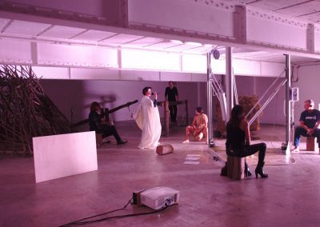

Historique de Pour une thèse vivante
Les épisodes de 2011 à 2017
« Initié en 2011, POUR UNE THÈSE VIVANTE est un projet qui, dans mon oeuvre, témoigne d’une part de mes réfexions
sur l’idée d’un art en tant qu’artisanat, en somme un ensemble de savoirs déjà établis et d’autre part il est en
même temps toujours en mouvement et naît dans l’acte même de ma pratique.
Je ne suis pas à distance de ma thèse, c’est la thèse elle-même qui soutient son propos. Je suis la thèse en
quelque sorte. Ma pratique scénique est ma thèse. Je ne « disserte » pas sur un sujet de recherche, ma pratique
scénique (et j’en suis l’artiste) disserte elle-même de ce qu’elle est. Elle se montre en acte et montre son
savoir.
Il s’agit d’un processus, toujours en formation, dans lequel je crée, à partir de l’espace de la réfexion et de
l’expérience de la danse et des arts plastiques, un dialogue avec différents corps de métiers. À la croisée de
l’art, de la science et de l’anthropologie, je m’interroge sur la façon dont un corps peut incarner ou non un
savoir, un savoir-faire, la manière dont celui-ci est nécessairement exposé à l’autre, et comment ces gestes
peuvent être en lien et formuler la fulgurance d’un sens.
Ce projet recouvre un triple questionnement sur ma propre pratique de l’acte de performer, l’histoire de la
pratique elle-même et la performance entendue au sens large de tout corps exerçant une activité donnée : au sens
où l’on retrouve la question du corps social, du métier.
Pour mener à bien cette question très importante de la recherche, je me suis entourée de nombreux intervenants sur
le plateau et à travers des entretiens flmés.
J’invite des collaborateurs artistiques, des personnes issues de différents champs professionnels et de différents
arts et métiers : un boucher, un modèle de cours de dessin, un tailleur de pierres, une actrice du cinéma, un
psychanalyste, une historienne d’art ; enfin des personnalités marquantes de l’histoire et de l’actualité de la
performance artistique.
Chacun s’exerce à son métier, à son propre art. L’art « du faire » et du « savoir-faire » se transmet en faisant
et en parlant. Le mot « Art » – au Moyen Age – signifait « savoir faire » et, en même temps, « savoir en parler ».
Ainsi cette recherche de la « thèse vivante » se nourrit du questionnement d’autres champs de réflexion (et de
création) en conservant toujours cette idée d’« art » en tant qu’« artisanat », un patrimoine de savoirs, toujours
conçus et en même temps en mouvement. En particulier les interviews permettent la confrontation immédiate de
l’interlocuteur, c’est-à-dire une présence « présente » et une oralité performée et spontanée.
C’est une parole organisée qui consent un échange de savoirs, fluide et affranchi des codes de la communication
institutionnelle. Le dialogue, l’oralité, l’interview, sont des formes que j’utilise pour « enquêter » sur cette «
transmission » des savoirs et des connaissances.
Cette thèse vivante est une confrontation, une mise en relation de matériaux qui tente de créer une pensée en
direct. Dans les outils du spectacle, cela se passe «là et maintenant», cela veut dire « être dans-mon-métier »
qui est d’être sur scène. Ce n’est pas faire démonstration d’un savoir mais l’apercevoir dans un acte de
dramaturgie. » — Claudia Triozzi

Episode 1
2011
Acte fondateur, cet épisode a été créé en réaction aux Accords de Bologne obligeant les
Écoles d’art à établir des partenariats avec des équipes de recherche d’autres établissements d’enseignement
supérieur, principalement avec l’Université.
« Pour une thèse vivante » tenté d’établir un lien de plus en plus fort entre écriture, recherche et pratique. Afin de
dépasser l’opposition binaire écriture/création plastique, recherche/représentation, la thèse vivante intervient pour
pointer les difficultés que peut rencontrer l’artiste à trouver un positionnement clair dans cet échange. C’est ainsi
que la « Thèse vivante » est un projet de longue haleine, appelé à emprunter diverses formes scéniques et programmées
non seulement dans des lieux de spectacles publics et privés mais également, dans des contextes universitaires et des
écoles d’art.
Conception et réalisation scénographique : Claudia Triozzi
Avec la participation de : Arnaud Labelle-Rojoux, artiste; Aymeric Louvet, tailleur de pierre; Gilles Ledorze, boucher
(Boucherie Heude Rennes); Michel Guillet, compositeur; Prunelle de l’Asinerie Histoire d’âne à la Bouexiëre
Interview : Esther Ferrer, artiste / Tôle à voix : sculpture des frères Baschet
2011-2012-2013 — au Musée de la Danse – Rennes, à la Ménagerie de verre – Paris, au MAC VAL à Vitry sur Seine, au CNDC
– Angers, aux halles de Schaerbeek – Bruxelles et au CCN de Montpellier
Claudia Triozzi rencontre Gianna Serra, actrice de cinéma et miss Italia 1963.
Conception et réalisation scénographique : Claudia Triozzi
Avec la participation de : Antonio Lamonica, faiseur de noeuds; Lucia Amara, chercheuse Christèle Selliez-Vandernotte,
chercheuse artiste et professionnelle du milieu artistique; Anna-Lisa Cataldo, réalisatrice
Conversation avec : Esther Ferrer, artiste ; Gianna Serra, actrice ; Marco Martignani, Emma Tubertini, Giovanna Cadoni
Composition musicale : Fernando Villanueva
2013 — au Festival di Danza Contemporanea in Italia – Bologne²
Episode 3
Avanti Tutta
2014
« Avanti Tutta, 30 ans dans un an et tant pis pour ceux qui sont fatigués »
Gianna Serra, actrice et Antonio Lamonica, éthologue se rencontrent en dialoguant sur la vie d’une actrice et un
vétérinaire passionné de noeuds.
Comment nous tenons et on s’y tient, à cette place aussi bien réelle qu’imaginaire de la représentation ?
Par quelle croyance souterraine et par quelle parole ?
Bluffée par le sort d’être encore là.
Des femmes, des hommes, parlent de leur aptitude au travail.
Un luxe du temps qui se fête ensemble.
Conception, Scénographie, Interprétation : Claudia Triozzi
Avec la participation de : Gianna Serra, actrice; Antonio Lamonica, faiseur de noeuds ; Violetta Sanchez,
mannequin; Michel Guillet, compositeur; Élise Chauvin, chanteuse
Claudia Triozzi choisit les anciennes écuries du Louvre de Napoléon III et la grande
proximité du Gothique tardif pour questionner la Sainte Marie Madeleine, statue iconique réalisée autour de 1515 et
attribuée à Grégor Erhart. Elle questionne les gestes des maîtres artisans de l’Europe du nord.
Exposant son érotique d’icône, au plus proche de sa peau de naissance, privée de son élan vers les cieux, immobile,
elle se laisse observer. Manipulée, corrigée, oubliée, descendue de la voûte parmi des oeuvres mineures, à une place
non désirée, peut-être se voulait-elle plus lointaine. Destinée semblable des corps en représentation. Et si nous
prêtions attention à la matière et au geste qui l’a conçue ?
Claudia Triozzi
Conception, réalisation scénographique et vidéos : Claudia Triozzi
Avec la participation de : Anne Renouvel-Nicolle, sculptrice; Alice Dromars, ancienne élève de l’école
Boulle; Denys Ludbrook, participant de l’atelier mené par Claudia Triozzi dans le cadre de sa résidence au T2G,
Gennevilliers, en 2014; Marie Dubuc, Marie-Madeleine
Interviews : Anne Renouvel-Nicolle, sculptrice; Sophie Brouquet, historienne; Agnès Caschio, restauratrice ; Juliette
Levy, restauratrice; Sophie Jugie, conservateur général du patrimoine, directrice du département des Sculptures, Musée
du Louvre ; Musique : Michel Guillet
2015 — au Musée du Louvre, dans le cadre de la Fiac
Episode 5
Habiter pour créer
Un CCN en terre et en paille
2016
Un CCN en terre et en paille est un manifeste pour l’habitat et l’architecture qui
revendique qu’un lieu est nécéssaire pour pouvoir faire.
Cette expérience met en relation un savoir-faire de la machine, on pourrait parler d’un artisanat « sans les mains »
(avec une imprimante 3D) et un savoir faire artisanal.
Claudia Triozzi invite Massimo Moretti, directeur de WASP entreprise italienne d’impression 3D à participer aux
représentations du CCN en terre et en paille.
Sur scène, une imprimante 3D construiera une première maquette du CCN.
En tissant des liens avec des savoir-faire de tous horizons, il a été souvent question pour moi de chercher la raison
de mon obstination à la scène.
Créer des changements permanents pour radicaliser une posture.
Le désir de partir d’autres usages de l’habitat vers la fabrication des lieux de survie liés aux catastrophes
naturelles, désir de projeter un lieu simple, sobre, répondant à un besoin ultime de se loger, d’habiter et qui
partirait de cette métaphore entendue comme la survie de l’expérience, survie de l’expérimentation des actes
artistiques partagés et proches de mon art.
Projeter lʼhabitat précaire et ses formes traitant du matériau naturel dans une grande simplicité.
Un CCN en terre et en paille, devient le lieu où je perpétue un acte dʼexpérience et dʼexpérimentation artistique.
Lieu de partage de savoir, ‘Pour une thèse vivante’, épisode 5 : Un CCN en terre et en paille se voit et se doit de
construire un lieu de plaisir où les sensibles dépasseraient la « tâche », de ce dit travail.
Laisser faire comme laisser penser des actes. »
Conception et réalisation Claudia Triozzi
Avec Anne Lise Le Gac, Corentin Malvoisin, Massimo Moretti (World Advanced Saving Project – impression 3D), Christine
Théodore (ethnopsychiatre), Claudia Triozzi
Avec la participation de Xavier Boussiron
Régie générale Sylvain Labrosse
Création lumière Yannick Fouassier
Vendredi 17 et samedi 18 novembre 2017 à 20h30
Les Inaccoutumés / La Ménagerie de verre
Episode 6
Habiter pour créer
2017
Un CCN en terre et en paille est un manifeste pour l’habitat et l’architecture qui revendique qu’un lieu est nécéssaire pour pouvoir faire.
Cette expérience met en relation un savoir-faire de la machine, on pourrait parler d’un artisanat « sans les mains » (avec une imprimante 3D) et un savoir faire artisanal.
Claudia Triozzi invite Massimo Moretti, directeur de WASP entreprise italienne d’impression 3D à participer aux représentations du CCN en terre et en paille.
Sur scène, une imprimante 3D construiera une première maquette du CCN.
Conception et réalisation Claudia Triozzi
Avec Anne Lise Le Gac, Corentin Malvoisin, Massimo Moretti (World Advanced Saving Project – impression 3D), Christine Théodore (ethnopsychiatre), Claudia Triozzi
Avec la participation de Xavier Boussiron
Régie générale Sylvain Labrosse
Création lumière Yannick Fouassier
Vendredi 17 et samedi 18 novembre 2017 à 20h30
Les Inaccoutumés / La Ménagerie de verre
